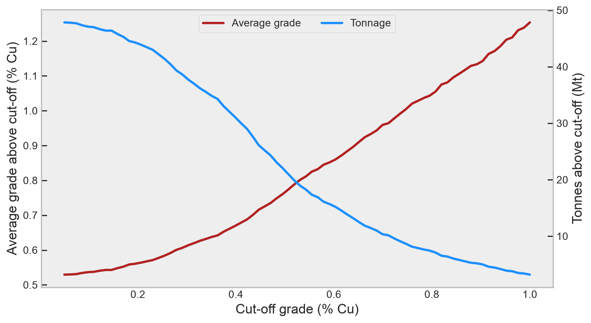
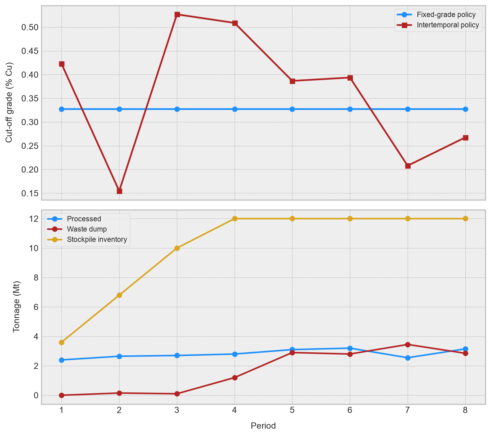
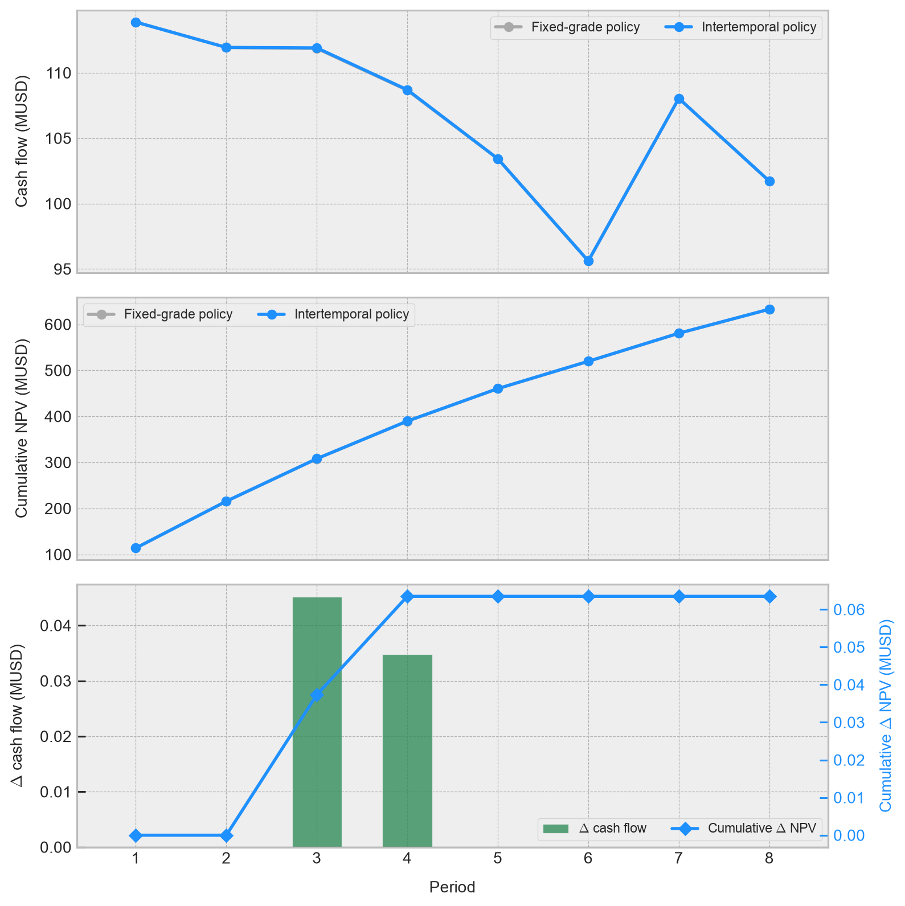

flowchart LR
A[Mine<br/>capacity M] -->|Q_m| B{Classification}
B -->|Q_c| C[Concentrator<br/>capacity C]
B -->|Q_m - Q_c| D[Waste dump]
C -->|Q_r = y g Q_c| E[Refinery / market<br/>capacity R]
Cut-off grades and reserve consumption strategy
Vickers and Lane, from the mine–plant–refinery network to stockpiles and co-products
Mining
Mine Planning
Mineral Economics
Optimization
Python
A mining and mathematical derivation of the Vickers and Lane models for selecting cut-off grades, managing capacity constraints, and designing reserve consumption strategies.
NoteCentral idea
A cut-off grade is not a geological property of a deposit: It is an economic decision that classifies material and assigns it to a destination within a production system whose capacities are limited. The Vickers method constructs this decision from the operating profit of a representative period. Lane’s algorithm goes further by charging for the opportunity cost of consuming today a capacity that could instead be used tomorrow. It therefore turns cut-off-grade selection into an intertemporal policy aimed at maximizing net present value.
Introduction
The Vickers and Lane models hold a special place in my university memories. In Mineral Economics—by far the most feared course in USACH’s Department of Mining Engineering, at least when I was a student—they first appeared as seemingly constructive, well-structured exercises: A mine, a plant, a refinery, and a handful of letters representing constraints and quantities. Then the bottleneck in the mining–metallurgical system would change, a stockpile would appear, a second metal would enter the problem and, in less than one page, the entire classroom would be negotiating with both the calculator and God. They caused havoc. Problems involving alternative mining methods, different metallurgical routes, or sales contracts with production caps were worse still. A genuine nightmare.
This article grew out of a teaching-assistant session I prepared several years ago to organize those exercises around a single pair of production models. We will not merely transcribe the old slides. Instead, we will reconstruct the expressions from physical balances, correct several classroom simplifications, and connect them with the way a mine planner should understand the problem: What material should be extracted, when should it be extracted, where should it be sent, and which scarce capacity is worth consuming?
The starting point is simple. Within an inventory, a block is not inherently ore or waste. Rock has mass, grades, recoveries, and geometallurgical attributes; we assign it a destination according to prices, costs, capacities, sequence, and opportunity. A cut-off grade can therefore change from one period to another even when the geological model itself remains unchanged.
TipWhat’s a cut-off grade?
A cut-off grade is an economic decision that classifies material and determines its destination within a production system with limited capacities. It is not a geological property of the deposit. Given a block model together with prices, costs, and capacities, the economic cut-off grade is the grade that maximizes the net present value of the production plan. Other criteria may also govern extraction policy: For example, the grade at which a marginal block just pays for processing, or the grade that balances the utilization of two bottlenecks. This article focuses on the economic formulation.
The cut-off grade as decision of destination
Let \(G\) be the random variable representing feed grade and let \(\gamma\) be a cut-off grade. For an inventory with mass \(Q_m\), define the fraction of material above the cut-off and its conditional average grade as
\[ p(\gamma)=P(G\geq\gamma), \qquad \overline{g}(\gamma)=\mathrm{E}[G\mid G\geq\gamma] \tag{1} \]
where \(P\) is the probability operator and \(\mathrm{E}\) is the expectation operator. If every unit of material satisfying \(G\geq\gamma\) is processed, plant tonnage and recovered metal are
\[ Q_c(\gamma)=Q_m p(\gamma), \qquad Q_r(\gamma)=y\,\overline{g}(\gamma)Q_c(\gamma) \tag{2} \]
where \(y\in(0,1]\) is the metallurgical recovery. These functions summarize the deposit’s grade–tonnage relationship: Raising \(\gamma\) reduces the tonnage sent to processing but increases the average feed grade. This trade-off lies at the heart of the mine-planning problem.
In a real mine, the binary choice between processing and waste disposal is only the simplest case. A block may be sent to plants with different treatment routes, high- or low-grade stockpiles, waste dumps, direct sale, or an alternative metallurgical circuit. A cut-off grade is therefore best understood as a boundary between destinations. It depends on geometallurgy and, above all, on the economics of the production system: Prices, costs, capacities, and extraction sequence.
The mining complex
We will start with a network of three production units:
We’ll use the following notation:
- \(M\), \(C\), and \(R\) are the mine, concentrator, and refined-metal production capacities per unit of time.
- \(Q_{m}\), \(Q_{c}\), and \(Q_{r}\) are the actual flows through those units.
- \(m\), \(c\), and \(r\) are, respectively, the mining cost per tonne moved, the concentration cost per tonne processed, and the smelting and refining charge per unit of metal.
- \(f\) is the fixed cost per unit of time.
- \(s\) is the price per unit of payable metal.
- \(y\) and \(g\) are the recovery and grade of a marginal unit of material.
Income and operational costs for a duration \(t\) are described by means of equations
\[ I=sQ_{r}, \qquad C_{\mathrm{op}}=mQ_{m}+cQ_{c}+rQ_{r}+ft \tag{3} \]
Since \(Q_{r}=ygQ_c\), the undiscounted profit is
\[ B=Q_{c}\left[(s-r)yg-c\right]-mQ_{m}-ft \tag{4} \]
The quantity \((s-r)yg\) is the net revenue attributable to one tonne of ore before concentration cost. In mine planning it is often clearer to call it the net smelter return per tonne, although we will retain the compact notation of the original formulation.
Vickers’ static criterion
The Vickers method compares the incremental benefit of processing a marginal tonne under different limiting resources. Its logic is static: It analyzes a representative period and does not explicitly value the timing of future cash flows. The result nevertheless depends on which part of the mining complex is the bottleneck.
Mine restriction
If the mine operates at full capacity, then \(Q_{m}=Mt\). Marginally increasing the material sent to the plant changes neither the tonnes moved by the mine nor the duration of the period. The marginal tonne must therefore pay for its own processing:
\[ (s-r)yg_m-c=0 \tag{5} \]
Thus, the economic ratio associated with the restriction of mine is
\[ g_m=\frac{c}{(s-r)y} \tag{6} \]
Mining cost does not appear because, under this reasoning, the tonne has already been extracted: The marginal decision is simply whether to process it in the concentrator.
Concentrator restriction
If the plant is the bottleneck, then \(Q_{c}=Ct\), and treating an additional tonne consumes \(1/C\) units of time. Occupying that capacity adds a share of the fixed cost:
\[ (s-r)yg_c-c-\frac{f}{C}=0 \tag{7} \]
Then,
\[ g_c=\frac{c+f/C}{(s-r)y} \tag{8} \]
This cut-off grade is usually greater than \(g_{m}\): When every hour of production is scarce, a tonne must pay for its treatment and also help support the system during the time it occupies the plant.
Refinery or market restriction
If metal production is limited by \(Q_{r}=Rt\), one tonne of ore with grade \(g\) consumes \(yg/R\) units of time. The marginal condition is therefore
\[ (s-r)yg_r-c-\frac{fyg_r}{R}=0 \tag{9} \]
where we get from
\[ g_r=\frac{c}{\left(s-r-f/R\right)y} \tag{10} \]
Equation (10) requires \(s-r-f/R>0\). If this condition is not met, the margin per unit of metal cannot cover the system’s time-dependent cost, and no finite positive cut-off grade exists under this regime.
WarningProfit isn’t the same as NPV
Vickers’ approach is useful for understanding marginal economics and constructing a static policy. Nevertheless, maximizing total undiscounted profit does not generally maximize net present value (NPV). Two schedules with the same cumulative profit can have very different values if one brings metal production forward while the other delays favorable cash flows.
Lane’s intertemporal criterion
The Lane method introduces exactly what is missing from Vickers’ static analysis: The value of the material left in the ground and the opportunity cost of occupying scarce capacity today.
From remaining value to opportunity cost
Let \(V\) be the current value of the plan and \(W\) the value of the ore remaining after the period. If \(d\) is a continuously compounded discount rate, the exact identity for a period of duration \(t\) is
\[ V=e^{-dt}(B+W) \tag{11} \]
For short periods, \(e^{dt}\approx 1+dt\) (an approximation related to Bernoulli’s inequality). Rearranging the first-order approximation gives
\[ B+W-V\approx dVt \tag{12} \]
The term \(F=dV\) is interpreted as an instantaneous opportunity cost per unit of time. In the marginal formulation, the effective time cost changes from \(f\) to
\[ f^\star=f+F=f+dV \tag{13} \]
This is not an accounting cost. It represents the value forgone when plant, mine, or commercial capacity is occupied by material that delays more valuable future cash flows.
Lane’s economic grades
Replacing \(f\) with \(f+dV\) in the time constraints derived from Vickers’ method gives
\[ g_m=\frac{c}{(s-r)y} \tag{14} \]
\[ g_c=\frac{c+(f+dV)/C}{(s-r)y} \tag{15} \]
\[ g_r=\frac{c}{\left[s-r-(f+dV)/R\right]y} \tag{16} \]
The mine cut-off grade remains unchanged because processing an already mined tonne does not extend an operation constrained by mine movement. Plant and refinery cut-off grades, by contrast, increase with \(V\): When substantial value remains to be captured, consuming scarce capacity slowly is expensive.
Balancing cut-off grades
The three expressions above are economic cut-off grades. They are not sufficient to construct Lane’s policy, because the system can move from one bottleneck to another. To identify those changes, we also need balancing cut-off grades.
The cut-off grade \(g_{mc}\) balances mine and concentrator capacity:
\[ \frac{Q_m(g_{mc})}{M} = \frac{Q_c(g_{mc})}{C} \tag{17} \]
The cut-off grade \(g_{mr}\) balances mine and refinery capacity:
\[ \frac{Q_m(g_{mr})}{M} = \frac{Q_r(g_{mr})}{R} \tag{18} \]
and \(g_{cr}\) balances concentrator and refinery capacity:
\[ \frac{Q_c(g_{cr})}{C} = \frac{Q_r(g_{cr})}{R} \tag{19} \]
These equations depend on the grade distribution because \(Q_c(\gamma)\) and \(\overline g(\gamma)\) change with \(\gamma\). They are usually solved numerically from the grade-tonnage curve.
The operational grade cannot be obtained by using blindly the maximum or minimum of all candidates. We have to:
- Calculate economic grades \(g_{m}\), \(g_{c}\) and \(g_{r}\).
- Calculate balance grades \(g_{mc}\), \(g_{mr}\) and \(g_{cr}\).
- Identify which capacities would be binding for each candidate.
- Discard candidates that are incompatible with their assumed bottlenecks.
- Choose the feasible candidate with the highest incremental value.
- Update \(V\), advance the reserve state, and repeat.
This is why Lane’s model produces an iterative policy. The value of the remaining reserve determines the current cut-off grade, while that cut-off grade changes the value of what remains. The Lane algorithm therefore alternates between determining cut-off grades and updating the remaining value until it converges to a stable policy.
Waste-disposal considerations
Suppose now that unprocessed material (waste or ballast) is sent to a waste dump at a cost \(l\) and \(Q_{l}=Q_{m}-Q_{c}\). The total cost is
\[ C_{\mathrm{op}}=mQ_{c}+lQ_{l}+cQ_{c}+rQ_{r}+ft \tag{20} \]
When replacing \(Q_{l}=Q_{m}-Q_{c}\),
\[ B =Q_{c}\left[(s-r)yg-m-c+l\right]-lQ_{m}-ft \tag{21} \]
The marginal tonne sent to the plant avoids the waste-disposal cost \(l\), but incurs mining and concentration costs. The economic cut-off grades derived from Vickers’ model are
\[ g_{m}=\frac{m+c-l}{(s-r)y} \tag{22} \]
\[ g_{c}=\frac{m+c-l+f/C}{(s-r)y} \tag{23} \]
\[ g_{r}=\frac{m+c-l}{\left(s-r-f/R\right)y} \tag{24} \]
The numerator \(m+c-l\) follows directly from comparing the processing and waste destinations for a marginal tonne. Sending the material to the plant incurs mining and processing costs, \(m+c\), but avoids the disposal cost \(l\) that would otherwise be paid. Hence \(m\) and \(c\) enter with positive signs, while \(l\) is an avoided cost and enters with a negative sign.
For Lane’s model, we replaced \(f\) by \(f+dV\) for time-conditioned expressions:
\[ g_{c}=\frac{m+c-l+(f+dV)/C}{(s-r)y}, \qquad g_{r}=\frac{m+c-l}{\left[s-r-(f+dV)/R\right]y} \tag{25} \]
Stockpile considerations
Suppose a fraction \(\alpha\) of the feed arrives directly from the mine and the remaining fraction \(1-\alpha\) is reclaimed from a stockpile. Let \(n\) be the stockpile rehandling cost. The equivalent variable cost per tonne treated is
\[ a(\alpha)=\alpha m+c-l+(1-\alpha)(l+n) \tag{26} \]
Thus,
\[ B=Q_{c}\left[(s-r)yg-a(\alpha)\right]-lQ_{m}-ft \tag{27} \]
and the static economic cut-off grades derived from Vickers’ model are
\[ g_{m}(\alpha)=\frac{a(\alpha)}{(s-r)y}, \qquad g_{c}(\alpha)=\frac{a(\alpha)+f/C}{(s-r)y}, \qquad g_{r}(\alpha)=\frac{a(\alpha)}{\left(s-r-f/R\right)y} \tag{28} \]
When \(\alpha=1\), the previous equations reduce to the case without a stockpile. Nevertheless, this formulation treats the stockpile as a transshipment node. Medium- and long-term planning must preserve mass and metal between periods:
\[ S_{t+1}=S_{t}+A_{t}-R_{t}; \qquad 0\leq S_{t}\leq \overline S \tag{29} \]
where \(A_{t}\) and \(R_{t}\) are the stacked and recovered tons. To preserve quality, a metal balance should be added:
\[ S_{t+1}\overline g_{t+1}=S_{t}\overline g_{t}+A_{t}g_{t}^{A}-R_{t}g_{t}^{R} \tag{30} \]
A real stockpile is not a memoryless box. It is an intertemporal inventory that defers value, mixes grades, changes recoveries, and can temporarily decouple mine and plant.
Co-products with restricted markets
Let \(\mathcal K=\{1,\ldots,K\}\) denote all products of economic interest in the mining and metallurgical complex. For each product \(k\), define price \(s_{k}\), smelting and refining charge \(r_{k}\), recovery \(y_{k}\), and grade \(g_{k}\). Revenue and profit are
\[ I=Q_{c}\sum_{k\in\mathcal K}(s_{k}-r_{k})y_{k}g_{k} \tag{31} \]
\[ B=Q_{c}\left[\sum_{k\in\mathcal K}(s_{k}-r_{k})y_{k}g_{k}-c\right]-mQ_{m}-ft \tag{32} \]
Solving for the cut-off grade of product \(j\) under the mine constraint gives
\[ g_{m}^{(j)}=\frac{c-\sum_{k\neq j}(s_{k}-r_{k})y_{k}g_{k}}{(s_{j}-r_{j})y_{j}} \tag{33} \]
The ore-waste boundary is no longer a point, but a hyperplane:
\[ \sum_{k\in\mathcal K}(s_{k}-r_{k})y_{k}g_{k}=c \tag{34} \]
If we define
\[ x_{k}=\frac{c}{(s_{k}-r_{k})y_{k}} \tag{35} \]
the boundary can be written as
\[ \sum_{k\in\mathcal K}\frac{g_{k}}{x_{k}}=1 \tag{36} \]
For a limited concentration under Lane’s criterion, simply replace \(c\) by \(c+(f+dV)/C\). If there are sales ceilings, liability for impurities or differential contracts, this equivalency ceases to be global: The marginal value of a metal depends on what commercial restriction is active.
By-products and equivalent grade
When the second metal is commercialised without its own restriction and its economic parameters are stable, we can express it in units of the main metal. For two products:
\[ E=\frac{(s_2-r_2)y_2}{(s_1-r_1)y_1} \tag{37} \]
The equivalent grade expressed in units of product \(1\) is
\[ g_{\mathrm{eq}}=g_1+Eg_2 \tag{38} \]
and income is given by
\[ I=Q_c(s_1-r_1)y_1g_{\mathrm{eq}} \tag{39} \]
Equivalent grade is therefore an economic conversion, not a mineralogical property. It changes with prices, recoveries, payabilities, penalties, and metallurgical routes. Treating it as a fixed block-model attribute throughout the life of mine can conceal meaningful changes in the deposit’s economics.
Vickers and Lane in perspective
The above results are summarized at Table 1.
| Aspect | Vickers | Lane |
|---|---|---|
| Conceptual horizon | Representative period | Remaining life of the deposit |
| Objective | Operating profit | Net present value |
| Time cost | \(f\) | \(f+dV\) |
| State variable | Limited | Explicit: reserves and remaining value |
| Bottlenecks | Economic cut-off grades | Economic and balancing cut-off grades |
| Natural use | Static diagnosis and policy | Iterative reserve-consumption strategy |
Neither cut-off-grade model replaces a modern production schedule. Phase and bench precedences, loading and haulage capacities, blending, development, geometallurgy, and commercial commitments usually require large mixed-integer or heuristic models. Even so, both models remain extremely valuable as foundations: They expose the marginal economics that a larger optimizer can hide.
A practical exercise focused on the reserve consumption strategy
We will build a deliberately rich synthetic case with eight sequentially available phases, mine, plant, and copper-production capacities, a waste dump, a stockpile, and discounting. We will compare:
- A fixed cut-off grade selected with a static Vickers criterion.
- A sequence of period-specific cut-off grades optimized directly for NPV.
The second approach is not intended as a complete canonical implementation of Lane’s algorithm. It is a numerical audit inspired by its central principles: Charge for time, preserve the state of the stockpile, and value a tonne differently depending on when it releases metal. We will implement it in Python, beginning with the required imports:
import matplotlib.pyplot as plt
import numpy as np
import pandas as pd
import seaborn as sns
from scipy.optimize import differential_evolution, minimize_scalarsns.set_theme()
plt.style.use("bmh")
plt.rcParams["figure.dpi"] = 90
pd.options.display.float_format = "{:,.3f}".formatInventory construction
Each row represents a selectable planning unit of \(50\,000\) tonnes. Copper grade decreases gradually with depth while retaining local variability, and recovery depends on both grade and a geometallurgical component:
# We define a fixed random seed to guarantee reproducibility.
rng = np.random.default_rng(42)
# We set up initial parameters.
N_PERIODS = 8
PARCELS_PER_PHASE = 120
TONNES_PER_PARCEL = 50_000.0
# And we built the synthetic inventory.
rows = []
for phase in range(N_PERIODS):
geological_domain = rng.choice(
["primario", "mixto", "secundario"],
size=PARCELS_PER_PHASE,
p=[0.55, 0.30, 0.15],
)
domain_effect = np.select(
[
geological_domain == "primario",
geological_domain == "mixto",
geological_domain == "secundario",
],
[0.0000, 0.0010, 0.0020],
)
grade = np.clip(
rng.lognormal(mean=np.log(0.0048), sigma=0.48, size=PARCELS_PER_PHASE)
+ domain_effect
- 0.00018 * phase,
0.0003,
0.018,
)
recovery = np.clip(
0.82
+ 16.0 * grade
+ np.select(
[
geological_domain == "primario",
geological_domain == "mixto",
geological_domain == "secundario",
],
[0.02, -0.02, 0.04],
)
+ rng.normal(0.0, 0.015, PARCELS_PER_PHASE),
0.72,
0.94,
)
for parcel, (domain, g, rec) in enumerate(
zip(geological_domain, grade, recovery)
):
rows.append(
{
"phase": phase,
"parcel": parcel,
"tonnes": TONNES_PER_PARCEL,
"cu_grade": g,
"recovery": rec,
"domain": domain,
}
)
# We convert the inventory to a DataFrame and display its first rows.
inventory = pd.DataFrame(rows)
inventory.head()| phase | parcel | tonnes | cu_grade | recovery | domain | |
|---|---|---|---|---|---|---|
| 0 | 0 | 0 | 50,000.000 | 0.011 | 0.940 | mixto |
| 1 | 0 | 1 | 50,000.000 | 0.004 | 0.901 | primario |
| 2 | 0 | 2 | 50,000.000 | 0.005 | 0.926 | secundario |
| 3 | 0 | 3 | 50,000.000 | 0.006 | 0.898 | mixto |
| 4 | 0 | 4 | 50,000.000 | 0.005 | 0.899 | primario |
Before optimizing, we construct the grade-tonnage curve. It shows how much material and metal are excluded as the cut-off grade rises:
# First, we define a cut-off-grade grid and a container for the results.
cutoff_grid = np.linspace(0.0005, 0.0100, 80)
grade_tonnage = []
# We calculate tonnage and average grade for every cut-off grade.
for cutoff in cutoff_grid:
selected = inventory.loc[inventory["cu_grade"] >= cutoff]
grade_tonnage.append(
{
"cutoff": cutoff,
"tonnes": selected["tonnes"].sum() / 1e6,
"average_grade": np.average(
selected["cu_grade"],
weights=selected["tonnes"],
) if len(selected) else np.nan,
}
)
# We convert the results to a DataFrame and plot them.
grade_tonnage = pd.DataFrame(grade_tonnage)
fig, ax_grade = plt.subplots(figsize=(9, 5))
ax_tonnage = ax_grade.twinx()
ax_grade.plot(
100 * grade_tonnage["cutoff"],
100 * grade_tonnage["average_grade"],
color="firebrick",
lw=2.5,
label="Average grade",
)
ax_tonnage.plot(
100 * grade_tonnage["cutoff"],
grade_tonnage["tonnes"],
color="dodgerblue",
lw=2.5,
label="Tonnage",
)
ax_grade.set(
xlabel="Cut-off grade (% Cu)",
ylabel="Average grade above cut-off (% Cu)",
)
ax_tonnage.set_ylabel("Tonnes above cut-off (Mt)")
lines = ax_grade.lines + ax_tonnage.lines
ax_grade.legend(
lines,
[line.get_label() for line in lines],
loc="upper center",
ncol=2,
)
ax_tonnage.grid(False)
ax_grade.grid(False)
plt.tight_layout()
Mining-complex simulator
The simulator treats the stockpile as a state variable. In each period:
- A phase is released and the cost of moving all its tonnes is incurred.
- Material above the cut-off grade competes for plant and refinery capacity.
- Potentially valuable material that cannot enter the plant is stockpiled.
- If capacity remains, material is reclaimed from the stockpile.
- Revenue, costs, cash flow, and NPV are calculated.
# Initial configuration of economic and capacity parameters.
PARAMS = {
"price": 8_820.0, # USD per tonne of payable Cu.
"refining": 620.0, # USD per tonne of Cu.
"mining": 3.10, # USD per tonne moved.
"processing": 9.20, # USD per tonne processed.
"dumping": 1.20, # USD per tonne sent to the waste dump.
"stock_rehandle": 1.60, # USD per tonne reclaimed.
"fixed": 8_000_000.0, # USD per period.
"plant_capacity": 3_200_000.0, # Plant capacity per period (tonnes).
"refinery_capacity": 20_000.0, # Refinery capacity per period (tonnes of Cu).
"stock_capacity": 12_000_000.0, # Stockpile capacity (tonnes).
"discount_rate": 0.10, # Annual discount rate.
"stock_min_grade": 0.0015, # Minimum Cu grade sent to stockpile.
}
# We define the functions that allow us to select plant and simulate material
# The cutting strategy.
def _select_for_plant(candidates, plant_capacity, refinery_capacity):
"""
Select mining units by NSR while respecting both plant and metal capacities.
NSR is the recovered net smelter return per tonne of ore, the economic
metric used to determine processing priority.
"""
if candidates.empty:
return candidates.copy(), candidates.copy()
ranked = candidates.assign(
recovered_cu=lambda x: x["tonnes"] * x["cu_grade"] * x["recovery"],
nsr=lambda x: (
(PARAMS["price"] - PARAMS["refining"])
* x["cu_grade"]
* x["recovery"]
),
).sort_values("nsr", ascending=False)
tonnes_cum = ranked["tonnes"].cumsum()
copper_cum = ranked["recovered_cu"].cumsum()
accepted = (
(tonnes_cum <= plant_capacity)
& (copper_cum <= refinery_capacity)
)
return ranked.loc[accepted].copy(), ranked.loc[~accepted].copy()
def simulate_strategy(cutoffs, discount=True):
"""
Simulate destinations, stockpile inventory, and cash flows for a cut-off policy.
"""
cutoffs = np.broadcast_to(np.asarray(cutoffs, dtype=float), N_PERIODS)
stock = inventory.iloc[0:0].copy()
records = []
for period, cutoff in enumerate(cutoffs):
fresh = inventory.loc[inventory["phase"] == period].copy()
fresh["origin"] = "mine"
stock["origin"] = "stock"
mined_tonnes = fresh["tonnes"].sum()
eligible_fresh = fresh.loc[fresh["cu_grade"] >= cutoff]
eligible_stock = stock.loc[stock["cu_grade"] >= cutoff]
candidates = pd.concat(
[eligible_fresh, eligible_stock],
ignore_index=False,
)
processed, rejected = _select_for_plant(
candidates,
PARAMS["plant_capacity"],
PARAMS["refinery_capacity"],
)
processed_idx = set(zip(processed["phase"], processed["parcel"]))
stock_idx = set(zip(stock["phase"], stock["parcel"]))
stock = stock.loc[
~stock.apply(
lambda row: (row["phase"], row["parcel"]) in processed_idx,
axis=1,
)
].copy()
fresh_not_processed = fresh.loc[
~fresh.apply(
lambda row: (row["phase"], row["parcel"]) in processed_idx,
axis=1,
)
].copy()
stock_candidates = fresh_not_processed.loc[
fresh_not_processed["cu_grade"] >= PARAMS["stock_min_grade"]
].sort_values("cu_grade", ascending=False)
available_stock_capacity = max(
PARAMS["stock_capacity"] - stock["tonnes"].sum(),
0.0,
)
to_stock = stock_candidates.loc[
stock_candidates["tonnes"].cumsum()
<= available_stock_capacity
].copy()
stock = pd.concat([stock, to_stock], ignore_index=True)
processed_tonnes = processed["tonnes"].sum()
recovered_cu = (
processed["tonnes"]
* processed["cu_grade"]
* processed["recovery"]
).sum()
reclaimed_tonnes = processed.loc[
processed.apply(
lambda row: (row["phase"], row["parcel"]) in stock_idx,
axis=1,
),
"tonnes",
].sum()
dumped_tonnes = fresh_not_processed["tonnes"].sum() - to_stock["tonnes"].sum()
revenue = (PARAMS["price"] - PARAMS["refining"]) * recovered_cu
cost = (
PARAMS["mining"] * mined_tonnes
+ PARAMS["processing"] * processed_tonnes
+ PARAMS["dumping"] * dumped_tonnes
+ PARAMS["stock_rehandle"] * reclaimed_tonnes
+ PARAMS["fixed"]
)
cash_flow = revenue - cost
discount_factor = (
(1 + PARAMS["discount_rate"]) ** period if discount else 1.0
)
records.append(
{
"period": period + 1,
"cutoff": cutoff,
"mined_mt": mined_tonnes / 1e6,
"processed_mt": processed_tonnes / 1e6,
"dumped_mt": dumped_tonnes / 1e6,
"reclaimed_mt": reclaimed_tonnes / 1e6,
"stock_mt": stock["tonnes"].sum() / 1e6,
"recovered_cu_kt": recovered_cu / 1e3,
"cash_flow_musd": cash_flow / 1e6,
"present_value_musd": cash_flow / discount_factor / 1e6,
}
)
schedule = pd.DataFrame(records)
return schedule, schedule["present_value_musd"].sum()Fixed and intertemporal policies
First, we find a single cut-off grade that maximizes undiscounted profit. We then optimize one cut-off grade per period by maximizing NPV directly:
# We have been generating high-level (Vickers) and intertemporal policies. The first one's a
# One dimensional optimization while the second is a multidimensional optimization.
static_solution = minimize_scalar(
lambda cutoff: -simulate_strategy(
np.repeat(cutoff, N_PERIODS),
discount=False,
)[1],
bounds=(0.0015, 0.0090),
method="bounded",
options={"xatol": 1e-5},
)
static_cutoff = static_solution.x
static_schedule, static_npv = simulate_strategy(
np.repeat(static_cutoff, N_PERIODS),
discount=True,
)
dynamic_solution = differential_evolution(
lambda cutoffs: -simulate_strategy(cutoffs, discount=True)[1],
bounds=[(0.0015, 0.0090)] * N_PERIODS,
seed=42,
maxiter=18,
popsize=5,
polish=True,
workers=1,
)
dynamic_cutoffs = dynamic_solution.x
dynamic_schedule, dynamic_npv = simulate_strategy(
dynamic_cutoffs,
discount=True,
)
# We built a comparative overview of both strategies.
comparison = pd.DataFrame(
{
"Strategy": ["Fixed-grade policy", "Intertemporal policy"],
"NPV (MUSD)": [static_npv, dynamic_npv],
"Total value (MUSD)": [
static_schedule["cash_flow_musd"].sum(),
dynamic_schedule["cash_flow_musd"].sum(),
],
"Cu recuperado (kt)": [
static_schedule["recovered_cu_kt"].sum(),
dynamic_schedule["recovered_cu_kt"].sum(),
],
}
).set_index("Strategy")
# And we put it on screen.
comparison| NPV (MUSD) | Total value (MUSD) | Cu recuperado (kt) | |
|---|---|---|---|
| Strategy | |||
| Fixed-grade policy | 632.945 | 855.174 | 158.172 |
| Intertemporal policy | 633.008 | 855.254 | 158.172 |
An intertemporal policy can accept a similar, or even slightly lower, cumulative undiscounted profit and still deliver a higher NPV. Its advantage comes from bringing forward plant use for material that releases more value per unit of capacity and from differentiating marginal material through the stockpile.
In this run, the difference between the two strategies is deliberately modest. The short-term selector already ranks mining units by NSR and captures much of the value created by operational prioritization. Intertemporal optimization can improve only the remaining decisions: Which marginal material to preserve, when to reclaim it, and how much stockpile capacity to occupy. This interpretation is more honest than attributing all value creation to a cut-off-grade curve when much of it actually comes from sequencing.
fig, ax = plt.subplots(nrows=2, ncols=1, figsize=(9, 8), sharex=True)
ax[0].plot(
static_schedule["period"],
100 * static_schedule["cutoff"],
marker="o",
color="dodgerblue",
lw=2.2,
label="Fixed-grade policy",
)
ax[0].plot(
dynamic_schedule["period"],
100 * dynamic_schedule["cutoff"],
marker="s",
color="firebrick",
lw=2.2,
label="Intertemporal policy",
)
ax[0].set_ylabel("Cut-off grade (% Cu)", fontsize=11, labelpad=10)
ax[0].legend(loc="best", fontsize=9)
ax[1].plot(
dynamic_schedule["period"],
dynamic_schedule["processed_mt"],
marker="o",
color="dodgerblue",
label="Processed",
)
ax[1].plot(
dynamic_schedule["period"],
dynamic_schedule["dumped_mt"],
marker="o",
color="firebrick",
label="Waste dump",
)
ax[1].plot(
dynamic_schedule["period"],
dynamic_schedule["stock_mt"],
marker="o",
color="goldenrod",
label="Stockpile inventory",
)
ax[1].set_xlabel("Period", fontsize=11, labelpad=10)
ax[1].set_ylabel("Tonnage (Mt)", fontsize=11, labelpad=10)
ax[1].legend(loc="best", fontsize=9)
plt.tight_layout()
The cut-off-grade profile must be read together with the flows. A high cut-off grade is not inherently “better”: It may simply indicate that the plant or refinery is saturated. A low cut-off grade does not imply poor discipline either. Near the end of mine life it may be correct, because opportunity cost falls and marginal value should be recovered before closure.
fig, ax = plt.subplots(3, 1, figsize=(9, 9), sharex=True)
for schedule, label, color in [
(static_schedule, "Fixed-grade policy", "darkgray"),
(dynamic_schedule, "Intertemporal policy", "dodgerblue"),
]:
ax[0].plot(
schedule["period"],
schedule["cash_flow_musd"],
marker="o",
lw=2.2,
color=color,
label=label,
)
ax[1].plot(
schedule["period"],
schedule["present_value_musd"].cumsum(),
marker="o",
lw=2.2,
color=color,
label=label,
)
# We figure out the incremental contribution of intertemporal policy with respect to fixed grade.
cash_flow_delta = (
dynamic_schedule["cash_flow_musd"]
- static_schedule["cash_flow_musd"]
)
npv_delta_cumulative = (
dynamic_schedule["present_value_musd"]
- static_schedule["present_value_musd"]
).cumsum()
# The bars show at what period they are created or different without concealing their sign.
delta_colors = np.where(cash_flow_delta >= 0, "seagreen", "firebrick")
ax[2].bar(
dynamic_schedule["period"],
cash_flow_delta,
width=0.55,
color=delta_colors,
alpha=0.78,
label=r"$\Delta$ cash flow",
)
ax[2].axhline(0, color="dimgray", lw=0.9)
# A second scale allows you to track the incremental value discount and accumulated.
ax_npv_delta = ax[2].twinx()
ax_npv_delta.plot(
dynamic_schedule["period"],
npv_delta_cumulative,
marker="D",
color="dodgerblue",
lw=2.2,
label=r"Cumulative $\Delta$ NPV",
)
ax_npv_delta.grid(False)
ax[0].set_ylabel("Cash flow (MUSD)", fontsize=11, labelpad=10)
ax[0].legend(ncol=2, loc="best", fontsize=9)
ax[1].set_ylabel("Cumulative NPV (MUSD)", fontsize=11, labelpad=10)
ax[1].legend(ncol=2, loc="best", fontsize=9)
ax[2].set_xlabel("Period", fontsize=11, labelpad=10)
ax[2].set_ylabel(r"$\Delta$ cash flow (MUSD)", fontsize=11, labelpad=10)
ax_npv_delta.set_ylabel(
r"Cumulative $\Delta$ NPV (MUSD)",
fontsize=11,
labelpad=10,
color="dodgerblue",
)
ax_npv_delta.tick_params(axis="y", colors="dodgerblue")
# We put both incremental panel scales together in a single legend.
delta_handles, delta_labels = ax[2].get_legend_handles_labels()
npv_handles, npv_labels = ax_npv_delta.get_legend_handles_labels()
ax[2].legend(
delta_handles + npv_handles,
delta_labels + npv_labels,
ncol=2,
loc="lower right",
fontsize=9,
)
plt.tight_layout()
The two curves in each upper panel are barely distinguishable because the economic difference is tiny relative to the full scale of the project. The gray series is present: It lies beneath the blue line because the intertemporal policy is drawn second and produces nearly identical flows. This does not mean that both optimizations found exactly the same sequence of cut-off grades. Rather, for this discrete inventory, most small changes do not alter the actual destination assigned to each mining unit.
The lower panel deliberately asks a different question. Instead of repeating the total value of each strategy, it shows what the intertemporal policy adds relative to the fixed-grade policy in each period. The bars represent the cash-flow difference, \(\Delta CF_t=CF_t^{\mathrm{intertemporal}}-CF_t^{\mathrm{fixed}}\): A positive bar indicates value created or brought forward relative to the reference, whereas a negative bar indicates deferred value or incremental cost in that period. The line shows the cumulative discounted sum of those differences—the path of \(\Delta NPV\).
This additional panel also prevents a misleading interpretation. A visible improvement on the incremental scale can remain economically small relative to more than 600 MUSD of total NPV. Its purpose is not to exaggerate the result, but to identify when it appears: In this run, the improvement is concentrated in periods 3 and 4. Thereafter, \(\Delta NPV\) remains almost constant and ends near 0.063 MUSD. This confirms that NSR-based dispatch already captures most of the available value and that intertemporal optimization operates on a narrow remaining margin.
From a mining perspective, the final NPV difference is not the only important result. We must also verify that the policy does not generate infeasible feed oscillations, use the stockpile as a fictitious source of capacity or quality, violate phase and bench sequencing, misuse plant or refinery capacity, or collapse under uncertainty in grade, recovery, price, and availability.
Each mining unit appears complete within its period in this example. A production schedule would add precedences, mining rates, equipment continuity, blending, multiple stockpiles, nonlinear recoveries, and geometallurgical constraints. The cut-off policy must be integrated with all of them; it cannot be repaired afterward.
Interactive cut-off grades
The expressions derived from Lane’s model are compact, but intuition becomes less comfortable once the system contains several destinations and products. To close the discussion, we will build a small laboratory that lets us change metal capacities, costs, and credits without losing sight of physical balances. The tool does not replace a production schedule or solve block precedences: It represents one inventory through a synthetic grade-tonnage distribution and searches for the best cut-off grade within that aggregated state.
Consider a primary metal indexed by \(k=0\) and up to two additional products. For each product, define a net price \(v_k\), recovery \(y_k\), and grade ratio \(\beta_k\) relative to the primary metal, with \(\beta_0=1\). Marginal recoverable revenue per tonne and per unit of primary-metal grade is
\[ a=\sum_{k=0}^{K}v_k y_k\beta_k \tag{40} \]
A by-product provides an economic credit but does not necessarily have an independent constraint. A co-product, however, may consume its own commercial or metallurgical capacity. The laboratory therefore lets the reader classify every additional product as a by-product or co-product. The second case introduces another capacity-time term.
For a cut-off grade \(\gamma\), let \(Q_m\) be total inventory, \(Q_c(\gamma)\) the processed tonnage, and \(Q_{r,k}(\gamma)\) the recovered production of product \(k\). If \(M\), \(C\), \(R_0\), and \(R_k\) represent the annual capacities of the mine, plant, primary-metal refinery, and co-product market \(k\), respectively, the scenario duration is
\[ T(\gamma)=\max \left\{\frac{Q_m}{M},\frac{Q_c(\gamma)}{C},\frac{Q_{r,0}(\gamma)}{R_0},\frac{Q_{r,k}(\gamma)}{R_k}:k\in\mathcal{K}_{\mathrm{co}}\right\} \tag{41} \]
The largest term identifies the bottleneck. This definition matters: We infer the operating regime not from the name of a capacity, but from the time each resource would require to execute the same scenario.
Waste dumps are modeled with a disposal cost and a total capacity. Stockpiles receive, beginning with the best submarginal grades, material whose retained future value still exceeds its rehandling cost. Let \(\Omega_S(\gamma)\) denote the option value of that inventory. The laboratory evaluates the economic function
\[ \Phi(\gamma)=I(\gamma)-C_{\mathrm{op}}(\gamma)-(f+dV)T(\gamma)+\Omega_S(\gamma) \tag{42} \]
where \(I(\gamma)\) contains revenue from all products and \(C_{\mathrm{op}}(\gamma)\) includes operating, disposal, and rehandling costs. The recommended cut-off grade is obtained numerically on a grid:
\[ \gamma^\star=\underset{\gamma \in \Gamma}{\arg\max}\;\Phi(\gamma) \tag{43} \]
The application also shows \(g_m\), \(g_c\), and \(g_r\), computed from Lane’s marginal expressions and the cost of the waste dump receiving the last tonne. These are analytical reference values. By contrast, \(\gamma^\star\) incorporates the grade distribution, destination limits, stockpile value, and co-product constraints. A discrepancy is not an error: It reveals what the scenario’s discrete structure adds to the marginal calculation.
Recommended grade—
Bottleneck—
Scenario value—
Duration—
The upper chart should be read in two layers. The value curve identifies the economic maximum, while the duration curve shows how long each cut-off policy would require. The cut-off-grade chart compares that optimum with the marginal reference grades. Finally, the destination balance verifies that the recommendation is not built on missing tonnes: The entire inventory must end up in the plant, a stockpile, a waste dump, or—if disposal capacity is insufficient—in a penalized overflow destination.
NoteAnd how to build this kind of interactive app…
The laboratory was built with JavaScript and D3 and embedded in this document through an HTML block. Its calculation logic is implemented in JavaScript and reads the parameters, capacities, products, and synthetic grade-tonnage distribution exposed by the interface. Each user interaction fires an event that updates the parameters, recalculates the scenario, and redraws the charts.
That may sound like a great deal of front-end terminology, but the core is simply HTML for structure, JavaScript for behavior, and D3 for graphical elements. The application is intentionally small; most of the work lies in learning how to coordinate user events, calculations, and chart updates. It is not intended as production software, but it is a useful pedagogical bridge between the equations and an interactive decision aid.
Final comments
The Vickers and Lane models remain relevant because they turn an enormous problem into a legible economic question. Vickers forces us to identify which costs a marginal tonne must pay. Lane takes the decisive next step: A tonne also consumes time, and that time can delay better material.
The main mining lesson is that cut-off grade cannot be managed independently of the system. A constrained plant, a saturated refinery, a full stockpile, or a limited sales contract changes the boundary between destinations. The main mathematical lesson is that this boundary emerges from marginal conditions and active constraints—not from a fixed number copied into the block model.
In modern operations, these criteria form a reasoning layer beneath more complete models. We can solve mixed-integer programs, simulate uncertainty, and optimize thousands of decisions, but we must still explain why one tonne goes to the plant, why another waits in a stockpile, and why a unit of metal should be brought forward. Vickers and Lane provide precisely that language.